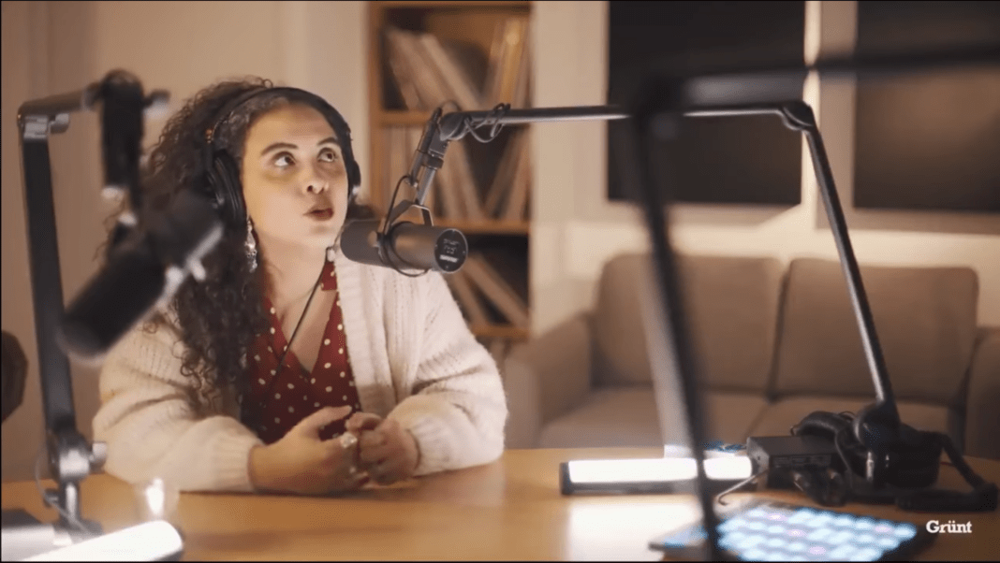
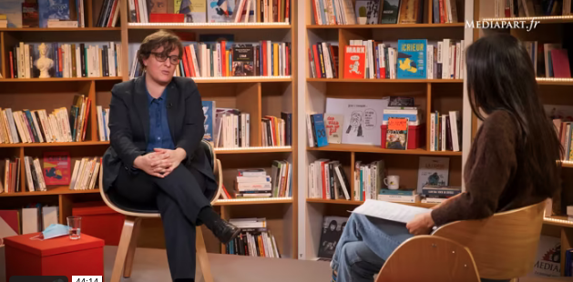
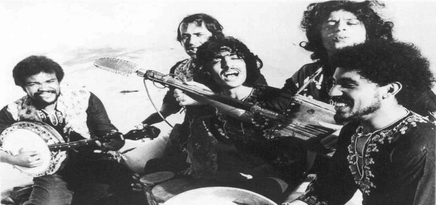
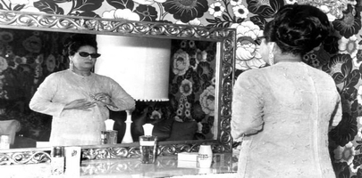
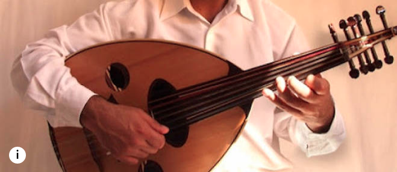

// Dans la Presse //
On parle d'Hajer ou Hajer nous parle...

Quand la musique sert l’émancipation des immigrés et de leurs enfants - Mediapart, février 2021 (VIDEO)

Quand la musique sert l’émancipation des peuples, Janvier 2021 (VIDEO)
Vintage Arab : à travers la musique, raconter les luttes qu’on tente d’effacer - Juin 2021
Interview El Watan - Janvier 2021

Hajer Ben Boubaker : “Le Maroc a utilisé la musique comme réponse au pouvoir” - Janvier 2021

Le podcast de la semaine : «Vintage Arab», l'histoire des migrations en musique - Le Figaro, décembre 2020
